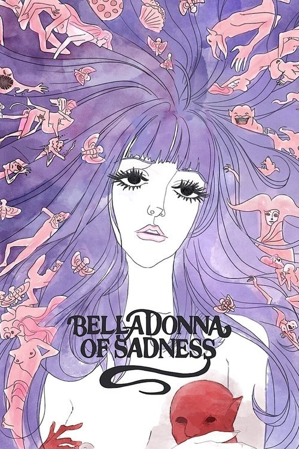

Belladonna of Sadness (1973)
Sinopsis Rápida
Desterrada y desesperada, una campesina pacta con el diablo para obtener poder. ¿A qué precio llegará la libertad y la venganza?
Sinopsis Detallada
En un mundo medieval opresivo, Jeanne, una joven campesina, es despojada de todo y obligada a un matrimonio forzado. Tras un encuentro con el diablo, ella adquiere poderes mágicos, desatando una ola de venganza contra sus opresores y embarcandose en un viaje de autodescubrimiento cargado de simbolismo y escenas oníricas. Esta adaptación libre y audaz de la historia de Juana de Arco explora temas de opresión, empoderamiento femenino y el coste del poder, todo envuelto en una estética visualmente impactante y psicodélica.
¿Por qué tenés que verla?
- Una exploración visualmente impactante y única de la historia de Juana de Arco.
- La animación psicodélica y la banda sonora innovadora crean una experiencia inmersiva.
- Su atrevida representación de temas feministas y su influencia en la animación posterior la convierten en un clásico de culto.
- Una obra maestra del anime que desafía las convenciones narrativas.
Idea Extra
Análisis del simbolismo y la iconografía presentes en Belladonna of Sadness, explorando su conexión con el feminismo y la rebelión.
{{CONTENIDO_RELACIONADO}}